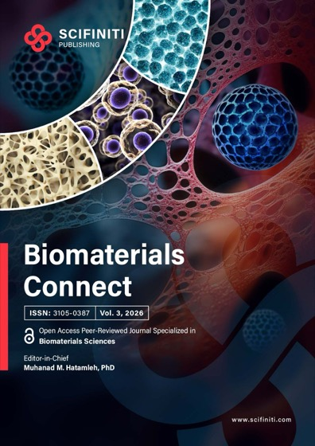
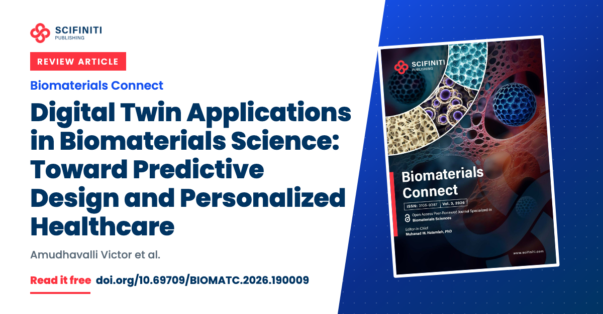
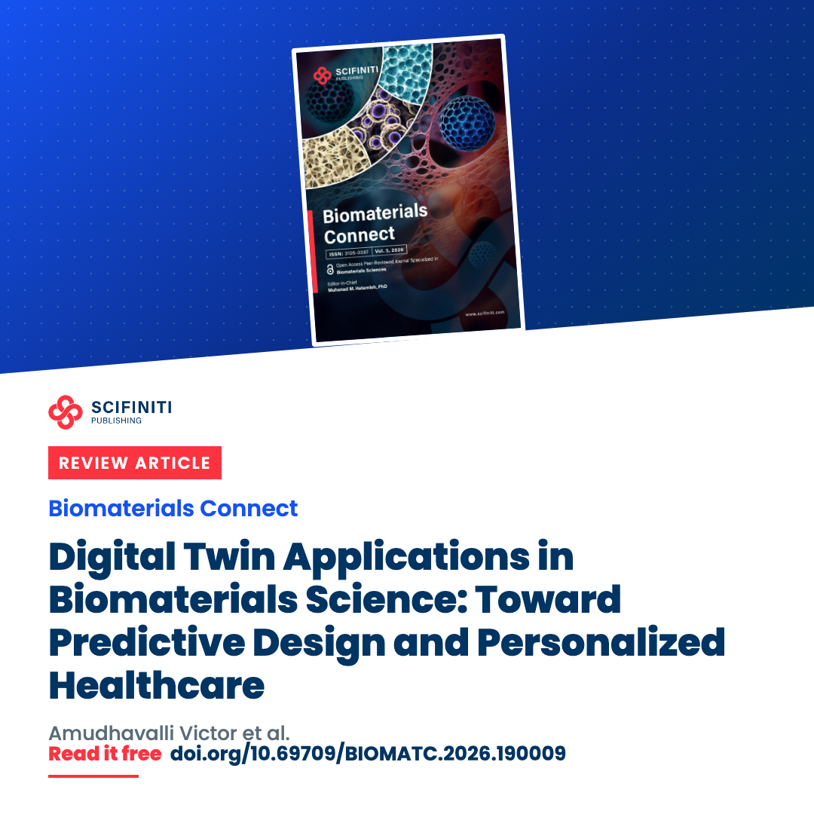
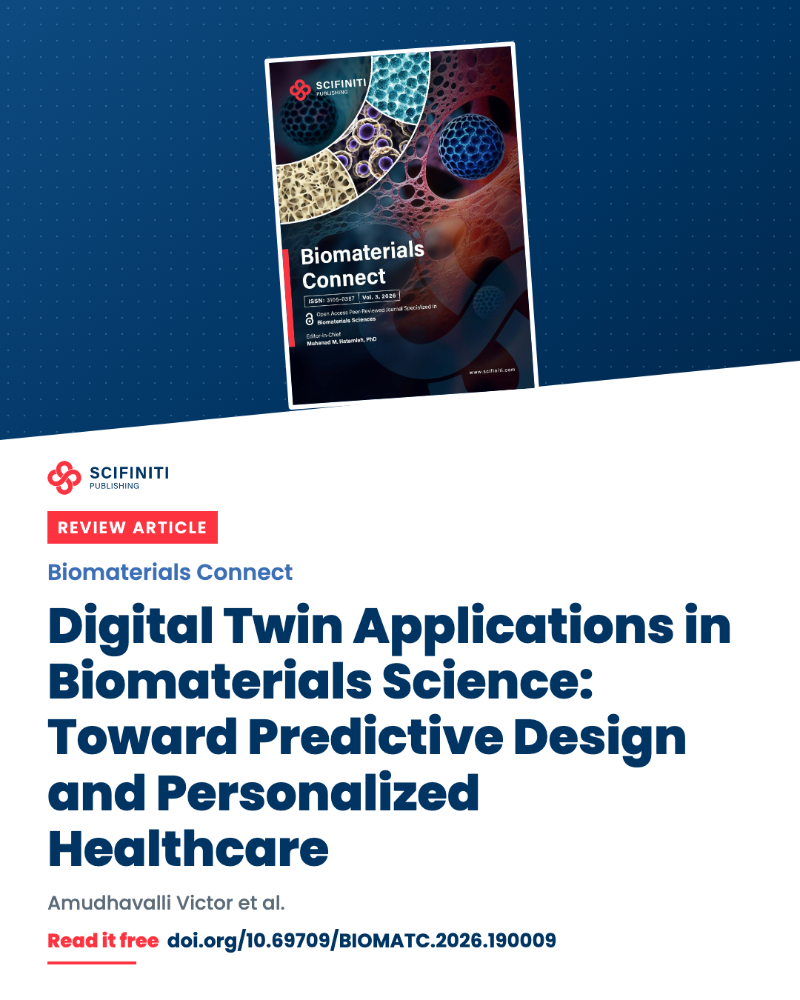

Promote your article
Biomaterials Connect
Thank you for publishing your work in Biomaterials Connect, and congratulations to you and your co-authors. Your certificate comes with your publication email.
Review article, available online 29 April 2026
Digital Twin Applications in Biomaterials Science: Toward Predictive Design and Personalized Healthcare
Amudhavalli Victor, Rakshita Hari, Habeeba Rihana
DOI 10.69709/BIOMATC.2026.190009. Open access under CC BY 4.0
The image and the caption are ready. Copy the caption, download the image, and post them.

Our new review article is published in Biomaterials Connect: “Digital Twin Applications in Biomaterials Science: Toward Predictive Design and Personalized Healthcare”. It is open access, free to read and download: https://doi.org/10.69709/BIOMATC.2026.190009 Thank you to all co-authors and to the journal's editors and reviewers. @Scifiniti #DigitalTwins #PersonalizedMedicine #PrecisionDiagnosis
Tag us: Scifiniti on LinkedIn and @scifinitipublishing on Instagram. On LinkedIn, type @ and choose Scifiniti from the list so the tag links.
Download the imageShare the post on LinkedIn or Instagram and tag Scifiniti. Use the caption and image above.
Send this page to your co-authors and colleagues, and to your university's media office, so they can share it too.
Send to co-authors Email colleaguesCite the article in your later papers where it is relevant, and add it to Google Scholar and ORCID. The reference and the steps are below.
Go to the referenceThen once a month, share it again with a new caption from the next section.
LinkedIn and Facebook take only the link, so copy the caption first and paste it into your post.
Our new review article is published in Biomaterials Connect: “Digital Twin Applications in Biomaterials Science: Toward Predictive Design and Personalized Healthcare”. Open access, free to read: doi.org/10.69709/BIOMATC.2026.190009 @scifinitipublishing #DigitalTwins #PersonalizedMedicine #PrecisionDiagnosis
Our new review article in Biomaterials Connect: “Digital Twin Applications in Biomaterials Science: Toward Predictive Design and Personalized Healthcare”. Open access: https://doi.org/10.69709/BIOMATC.2026.190009 #DigitalTwins
Our new review article is out in Biomaterials Connect: “Digital Twin Applications in Biomaterials Science: Toward Predictive Design and Personalized Healthcare”. It is open access, so anyone can read it here: https://doi.org/10.69709/BIOMATC.2026.190009
Our article “Digital Twin Applications in Biomaterials Science: Toward Predictive Design and Personalized Healthcare” is now published in Biomaterials Connect. It is free to read here: https://doi.org/10.69709/BIOMATC.2026.190009
Published last month in Biomaterials Connect: “Digital Twin Applications in Biomaterials Science: Toward Predictive Design and Personalized Healthcare”. If you work on digital twins, it is free to read: https://doi.org/10.69709/BIOMATC.2026.190009
Our Biomaterials Connect article has been read 321 times on scifiniti.com so far. Thank you to everyone who shared it. Free to read: https://doi.org/10.69709/BIOMATC.2026.190009


These images and the article's figures are published under CC BY 4.0: you may use and adapt them, with credit to the article.
Cite it in your later papers where it is relevant, and add it to your research profiles so others can find and cite it.
Victor, A., Hari, R., & Rihana, H. (2026). Digital Twin Applications in Biomaterials Science: Toward Predictive Design and Personalized Healthcare. Biomaterials Connect, 3, 2026.0027. https://doi.org/10.69709/BIOMATC.2026.190009
Victor A, Hari R, Rihana H. Digital Twin Applications in Biomaterials Science: Toward Predictive Design and Personalized Healthcare. Biomaterials Connect. 2026;3:2026.0027. doi:10.69709/BIOMATC.2026.190009
Put this QR code and the DOI on your final slide or your poster.
doi.org/10.69709/BIOMATC.2026.190009
Download the QR codeScifiniti Publishing, scifiniti.com